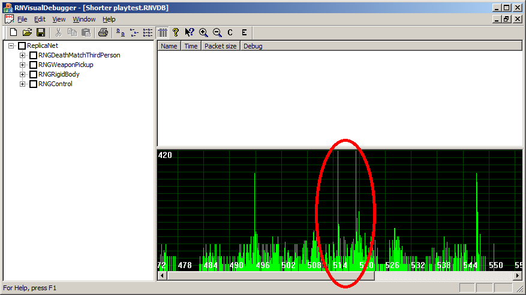
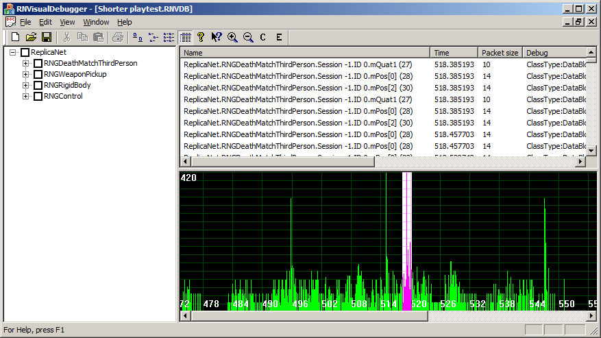
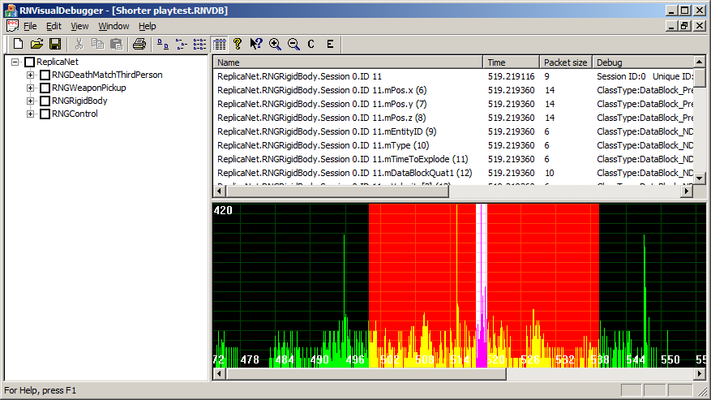
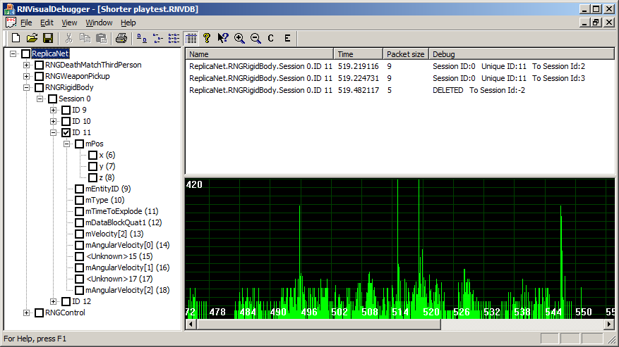

|
ReplicaNet Visual Debugger
The RNVisualDebugger application is a data analysis tool designed to aid the programmer in optimising object updates to lower network bandwidth. The debugger can connect to active network sessions or load offline debug files. During software testing and development these debug logs can be captured by the testing department and sent to the programmer for later analysis.

The main windows consists of three sections:
-
Left: The registered object tree view. This contains object IDs and class members sent from the debugger connected peer.
-
Top right: The object update list containing each update sent, the source object ID, time, DataBlock filter used and any further data relevant to each DataBlock type. In the above picture the list is currently blank because no objects have been selected.
-
Bottom: A network bandwidth graph drawn with respect to the network session time.
Circled in red can be seen two network bandwidth spikes somewhere between 514 and 520 seconds. This document will show how to analyse one of the spikes to find out which object is the cause of this spike.
Analyse the bandwidth spike
To analyse the spikes use the left mouse button to click drag and select an area on the network bandwidth graph. The selection will appear with a white background and purple bandwidth.

The above picture shows all of the object updates that occur during the selected period. Looking at the scroll bar for the object update list there are a lot of updates. This is expected because the updates in the selected area are from more than just the object responsible for the bandwidth spike. A filter can be used to clarify the data further. Using the right mouse button click drag and highlight an area before and after the selected area.

This filtering selection results in a much shorter list of object updates. In this example the only updates in the list are from the object called "ReplicaNet.RNGRigidBody.Session 0.ID 11" and the time this object is first logged is at 519.2 seconds. This corresponds with the time the network spike is seen in the network graph view. It is reasonable to conclude that the object spawning and moving has created a spike in the bandwidth. The tree view can be used to select and analyse object update packets. For example expand the RNGRigidBody node, followed by Session 0, ID 11 and tick the box.

This shows the "ReplicaNet.RNGRigidBody.Session 0.ID 11" object has been sent to session ID 2 and 3 at 519.2 seconds. At 519.5 seconds a delete update was sent to session ID -2 which is the broadcast session. This shows the object was in the network session for less than a second. It is also possible to check the other sub-tree boxes related to this object and see how frequently the other class member variables update. If the programmer concludes these update too frequently (or too seldom) the DataBlock filter parameters can be adjusted.